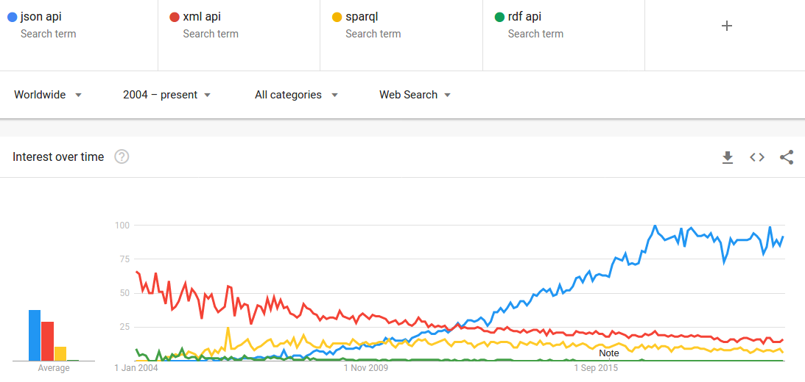
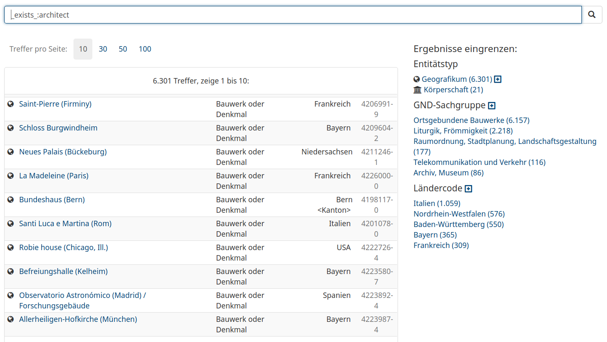

Normdaten als Linked Data publizieren und nutzen
lobid-gnd, OpenRefine Reconciliation und SkoHub
Adrian Pohl /
Pascal Christoph /
Fabian Steeg
Offene Infrastruktur,
Hochschulbibliothekszentrum NRW (hbz)

WWW, 2020-06-26
Vortrag im Rahmen des Kolloquiums Digital Humanities der Universität zu Köln
Diese Präsentation:
http://slides.lobid.org/dhc-2020/

Agenda
| 1. Normdaten | |
| 2. Linked Data & JSON-LD | |
| 3. OpenRefine Reconciliation | |
| 4. SkoHub |
1. Normdaten
Warum Normdaten?
Ursprüngliches Ziel: normierte Namensformen für Dinge und Personen
Ermöglicht (bereits im Zettelkatalog!) einheitlichen Einstieg bei der Literatursuche, z.B. von oder über eine bestimmte Person
Zur Suche nach Literatur zu einem bestimmten Thema anhand eines normierten Terms


Was sind Normdaten? 1/2
Datensätze zur eindeutigen Identifizierung von Personen, Organisationen, geographischen und/oder administrativen Einheiten, Themen etc.
ein Normdatensatz besteht mindestens aus: ID, Vorzugsbenennung
oftmals gibt es weitere identifizierende Merkmale, z.B.: alternative Benennungen, Lebensdaten, Orte (Geburts-, Sterbeort, Wirkungsort, Sitz etc.)
Was sind Normdaten? 2/2
Normdatensätze können aufeinander verweisen, z.B. Person --geborenIn--> Ort
...oder auf Einträge zum selben Gegenstand in anderen Datenbanken
Die Gemeinsame Normdatei (GND)
Die GND ist die Normdatei für Bibliotheken im deutschsprachigen Raum
Sie beinhaltet Datensätze für Personen, Körperschaften, Konferenzen & Veranstaltungen, Geografika, Schlagwörter, Werke
Sie wird sowohl für die formale Erfassung einer Ressource verwendet (Autor*innen, Körperschaften etc.) als auch für die inhaltliche Erschließung (wer oder was sind die Themen einer Ressource
Die GND-Kooperative
(Insbesondere Wissenschaftliche) Bibliotheken katalogisieren primär in Verbundkatalogen
Verantwortlich für die GND ist die GND-Kooperative
die GND-Kooperative besteht hauptsächlich aus den deutschsprachigen Bibliotheksverbünden, dena ngeschlossenen Bibliotheken sowie die Deutsche Nationalbibliothek (DNB) als technischer Hoster
in den letzten Jahren wird die GND vermehrt auch von Archiven, Museen und Wissenschaftler*innen genutzt
die weitere Öffnung der GND wird insbesondere von der DNB gefördert (z.B. GND4C)
2. Linked Data
Ziele
Überführung traditioneller bibl. Praktiken in das Web
Sichtbarkeit und Auffindbarkeit im Web erreichen
Nachnutzbarkeit ermöglichen
Synergieeffekte durch Verlinkung mit anderen Daten
Verbesserung der Recherchemöglichkeiten
Quelle: Pohl, Adrian / Ostrowski, Felix (2010): 'Linked Data' - und warum wir uns im hbz-Verbund damit beschäftigen." B.I.T. Online 13(3): S. 259-268. Preprint: http://hdl.handle.net/10760/14836Offene Infrastruktur im hbz
Wir unterstützen die Etablierung und Pflege einer zukunftssicheren bibliothekarischen Dateninfrastruktur im regionalen, überregionalen und internationalen Raum
Wer macht was
Bibliothekar*innen / Informationsexpert*innen (Adrian, X): Datenmodellierung & Standards, Metadaten-Formate, -Vokabulare, -Mappings, Functional Review
Entwickler*innen (Pascal, Fabian, X): Datentransformation, Administration, Indexierung, Web-APIs, Oberflächen
Offen – wie?
Offene und transparente Arbeitsweise
Sämtliche Entwicklungen auf Basis offener Webstandards
Code und Daten sind offen lizenziert
Publikationen, Lehr- und Lernmaterialien im Web mit offener Lizenz
Offen – warum?
Alternative zu einem in der Bibliothekswelt weit verbreiteten Vendor Lock-in
Voraussetzung für Tranzparenz und Nachnutzung
Erhöhte Sichtbarkeit der eigenen Arbeit
Motivationssteigernd, sinnstiftend, innovationsfördernd
Open Definition
Wissen ist offen, wenn jedeR darauf frei zugreifen, es nutzen, verändern und teilen kann – eingeschränkt höchstens durch Maßnahmen, die Ursprung und Offenheit des Wissens bewahren.http://opendefinition.org/od/2.1/de/
Linked Data: Best Practices
- Nutze URIs als Namen für Dinge
- Nutze HTTP-URIs, so dass Menschen sie aufrufen können
- Wenn jemand einen URI aufruft, biete nützliche Informationen an unter Nutzung der Standards (RDF*, SPARQL)
- Nimm Links zu anderen URIs auf, so dass weitere Dinge entdeckt werden können.
Semantic Web
– cutting edge seit 1999
RDF isn't natural — and therefore is barely used — by the average Web developer or data wrangler. CSV [and JSON], by contrast, is. And you are going to need to win the hearts and minds of those folks for whatever approach is proposed.
– Rufus Pollock, 2013 (siehe hier & hier)
Vom Semantic Web...
"Stop mentioning RDF and the Semantic Web"
"Focus on tools for developers"
"Do more dogfooding"
– Manu Sporny, damals Vorsitzender der RDFa Working Group beim W3C, der JSON-LD Community Group & Mitglied weiterer Semantic-Web-Gruppen, beim Schreiben an der JSON-LD-SpezifikationSporny (2012)
...zu Linked Data...
Ultimately, RDF and the Semantic Web are of no interest to Web developers. They also have a really negative public perception problem. We should stop talking about them. Let’s shift the focus to be on Linked Data, explaining the problems that Web developers face today, and concrete, demonstrable solutions to those problems.ebd.
...zu LOUD

Source: Rob Sanderson on twitter
"Using Data"?
Daten werden mit existierender Software bearbeitet (ausgewertet, ergänzt, integriert etc.)
Entwicklung neuer Software zur Interaktion mit Daten
LOUD: Orientierung auf Bedürfnisse und Konventionen rund um Software (Entwicklung, Standards, etc.)
Damit Daten nützlich sind, muss man die Zielgruppe kennen & eigene Angebote auf sie ausrichten
Hauptzielgruppe: Entwickler*innen oder Nutzer*innen von Software für Datenzugriff und -manipulation
APIs
Software baut auf APIs auf
APIs machen Softwareentwicklung handhabbar (für 1st- und 2nd-Party-Software)
APIs ermöglichen Nutzung und Integration von 3rd-Party-Software
Zum Bsp. lobid-Formate und -Anwendungen

APIs entkoppeln Anwendungen von Datenquellen, Formaten und Systemen. Sie ermöglichen so modulare, zukunftsfähige Applikationen
Und wie APIs bereitstellen?
JSON (JavaScript Object Notation) über HTTP (Hypertext Transfer Protocol)
Der Web-API-Standard seit Jahren, siehe z.B. Target (2017)
JSON-Nutzungstrend
xml api json api sparql endpoint
Quellen: Google Trends, Web Data Commons, W3TechsJSON
Ein einfaches Key-Value-Format für strukturierte Daten
Key ist immer ein String
Value ist Object, Array, Number, String oder Boolean
{ "foo": "bar" }
Beispiel:
GET https://api.github.com
{
"current_user_url": "https://api.github.com/user",
"authorizations_url": "https://api.github.com/authorizations",
"emails_url": "https://api.github.com/user/emails",
"emojis_url": "https://api.github.com/emojis",
"events_url": "https://api.github.com/events",
"feeds_url": "https://api.github.com/feeds",
"followers_url": "https://api.github.com/user/followers",
"gists_url": "https://api.github.com/gists{/gist_id}",
"hub_url": "https://api.github.com/hub",
...
}
JSON + Linked Data = JSON-LD

JSON-LD
"designed to be usable directly as JSON, with no knowledge of RDF" – Es ist richtiges JSON!
"also designed to be usable as RDF"
JSON
$ curl -H "Accept: application/json" https://api.github.com/users/acka47
{
"login": "acka47",
"avatar_url": "https://avatars2.githubusercontent.com/u/160292?v=4",
"url": "https://api.github.com/users/acka47",
"type": "User",
"name": "Adrian",
"company": "hbz",
"location": "Cologne, Germany",
"bio": "Metadata, RDF, vocabularies. Working at @hbz. "
}
JSON + @context + @id = JSON-LD
{
"@context": "http://schema.org/",
"@id": "https://github.com/users/acka47",
"login": "acka47",
"avatar_url": "https://avatars2.githubusercontent.com/u/160292?v=4",
"url": "https://api.github.com/users/acka47",
"type": "User",
"name": "Adrian",
"company": "hbz",
"location": "Cologne, Germany",
"bio": "Metadata, RDF, vocabularies. Working at @hbz. "
}
Diese Entwicklung spiegelt sich in unserer eigenen Arbeit wieder
Von LOD zu LOUD – Erfahrungen aus zehn Jahren Linked-Open-Data-Entwicklung am hbz
lobid-Dienste
lobid-resources: Daten des hbz-Verbundkatalogs
lobid-organisations: Daten des deutschsprachigen Sigelverzeichnisses und DBS-Stammdaten
lobid-gnd: Gemeinsame Normdatei
2010-2013: Alpha-Betrieb
Publikation zunächst von RDF-Dateien, dann auch SPARQL
Datentransformation mit Perl-Skript, dann hbz-Tool
Jahrelanger Prozess zur offenen Lizenzierung der Verbunddaten
2013-2017: lobid v1.x
Richtung LOUD: Von RDF-Dateien und SPARQL zu LOD-API mit generiertem JSON-LD
Datentransformation mit Metafacture
Fokus auf Schnittstelle, keine Oberflächen
seit 2017: lobid v2
Richtig LOUD: JSON-LD-y JSON-LD
Oberflächen
OpenRefine-Schnittstellen
Beispiel: lobid-gnd
a. Die Oberfläche

Auto Suggest

Ergebnisliste

Einzeltreffer

Beziehungsgraph

b. Die Daten
JSON(-LD)


Datenherkunft & -generierung
Tägl. Bezug der GND-RDF-Daten von der DNB via OAI-PMH
Konversion nach JSON-LD mittels @context, Framing etc.
Homogenisierung von Typen und Label-Properties
Labels für verlinkte Ressourcen ergänzen
Anreicherung mit EntityFacts-Links und -Bildern
Et voilà: Linked Open Usable Data (LOUD)
c. Web-API

Abfragemöglichkeiten
JSON-LD-Daten in Elasticsearch-Index
Elasticsearch bzw. Lucene Suchsyntax
OpenRefine Reconciliation Endpoint
Für Einzeltreffer andere RDF-Serialisierungen per Content Negotiation
Beispiel-Abfragen
Personen, die während der NS-Zeit in Köln geboren wurden

Alle Entitäten, zu denen ein Architekt angegeben wurde
lobid-gnd: Formulierung komplexer Suchanfragen
Reconciliation mit OpenRefine
Matchen eigener Daten (z.B. Liste von Namen aus Texten) auf GND-Ressourcen in OpenRefine
Übernahme von Daten aus spezifischen Feldern in der GND mittels Data Extension API
lobid-gnd ist der zweite Dienst nach Wikidata, der die Data Extension API unterstützt
Große Resonanz auf das Angebot, insbesondere aus den Digital Humanities


https://lobid.org/gnd/reconcile
SkoHub
...
Wie könnte ein webbasierter Ansatz zur themenbasierten Subskription von OER aussehen?
URIs, URIs, URIs
URIs für OER & kontrollierte Vokabulare (mit SKOS)
Web-basierte Subskription & Benachrichtigung
(with ActivityPub)
Eine Inbox für jedes Thema

Anwendungen senden Benachrichtigungen an die Inbox

Anwendungen abonnieren eine Inbox und erhalten Push-Benachrichtigungen

Beispiel

Vorteile
Push- statt Pull-Ansatz
Unterstützt OER überall im Web
Der Nutzen von Normdaten/KOS wird maximiert
Die Erstellung und Pflege gemeinsamer, plattformübergreifender KOS wird gefördert
Anreize für OER-Produzenten, strukturierte Metadaten zu ergänzen
Das SkoHub-Projekt versucht zudem wesentliche Lücken zu schließen, die über die Jahre im Kontext der KIM-Gruppe "OER-Metadaten" identifiziert wurden.
...dies sind:
Prozess & Tools zur maschinen- und menschenlesbaren Publikation kontrollierter Vokabulare
Webbasierter Metadateneditor inklusive Validierung zur Beschreibung von OER
Bonus: Infrastruktur zur normdatenbasierten Subskription von OER
SkoHub-Projekt (seit 2019)
Infrastruktur für Inboxes & Subskription (skohub-pubsub)
Static Site Generator für SKOS-Vokabulare (skohub-ssg, Bsp.)
Erfassung, Verlinkung & Senden von Benachrichtigungen im Browser (skohub-editor)
Browser-basierte Subskription von Themen (skohub-deck)
Für weitere Informationen siehe SkoHub-Beiträge im lobid-Blog
Weiterführende Informationen
- lobid-Blog
- lobid auf Twitter und Mastodon
- Kreutzer, Till (2011): Open Data – Freigabe von Daten aus Bibliothekskatalogen. Hg. v. Hochschulbibliothekszentrum des Landes Nordrhein-Westfalen (PDF)
- Pohl, Adrian / Steeg, Fabian / Christoph, Pascal (2018): lobid – Dateninfrastruktur für Bibliotheken. In: Informationspraxis 4(1). https://doi.org/10.11588/ip.2018.1.52445
- Sporny, Manu (2012): The Problem with RDF and Nuclear Power. URL: http://manu.sporny.org/2012/nuclear-rdf/
- Steeg, Fabian / Pohl, Adrian / Christoph, Pascal (2019): lobid-gnd – Eine Schnittstelle zur Gemeinsamen Normdatei für Mensch und Maschine. In: Informationspraxis 5(1). https://doi.org/10.11588/ip.2019.1.52673
- Target, Sinclair (2017): The Rise and Rise of JSON. URL: https://twobithistory.org/2017/09/21/the-rise-and-rise-of-json.html